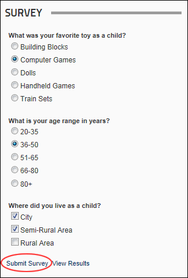

Submitting Survey Response
How to submit a response to a survey on the Survey module. Note: Access to view results may be restricted.
- If a message reading "You must sign in to vote in this survey" is displayed below the questions you must Login to the site to submit a response to the survey.
- Click in the selection boxes to select your answer(s) for each question.
- Click the Submit Survey link.

- If you are authorized to view survey results, the accumulative results are displayed. If you are unable to view results the message "Thank You for Participating" is displayed.